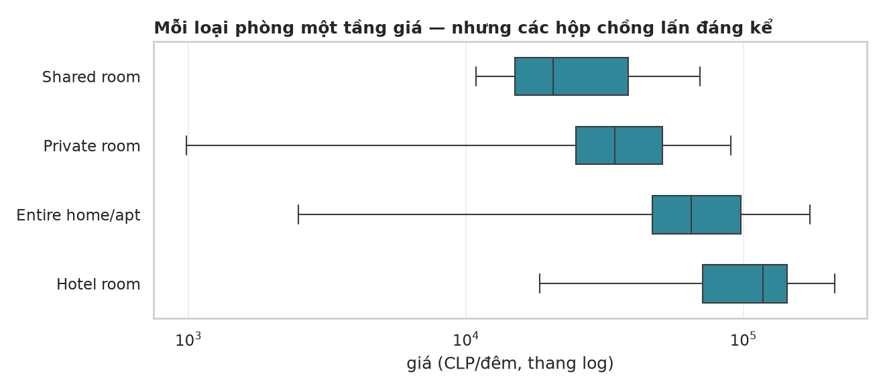
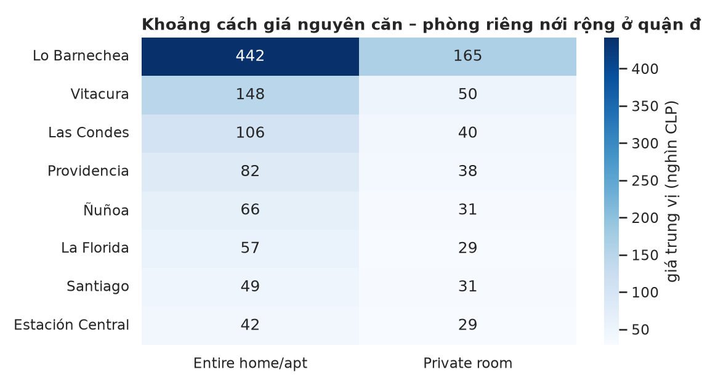
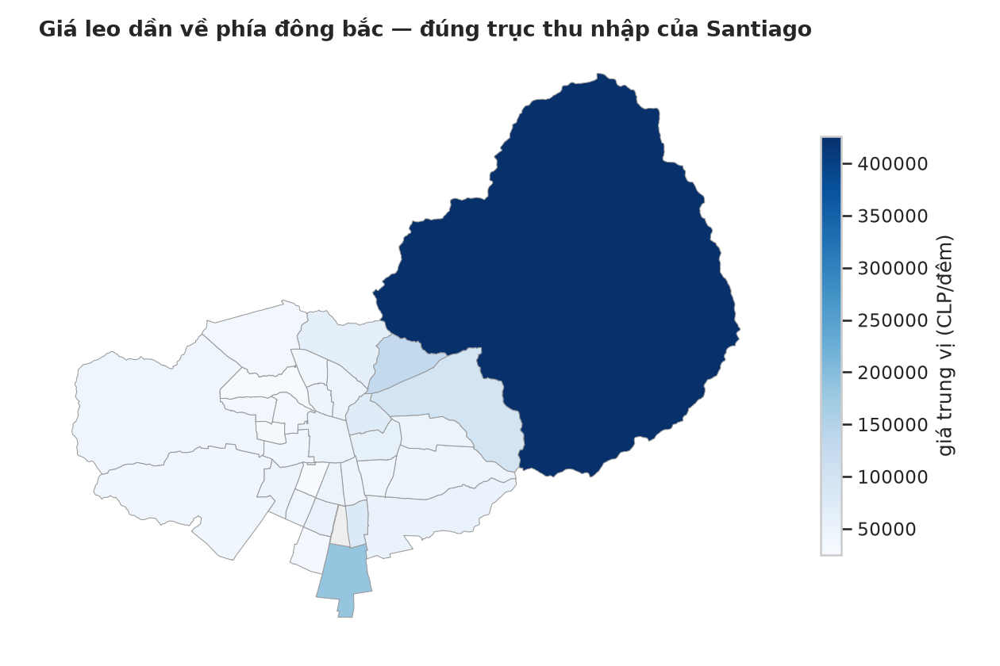
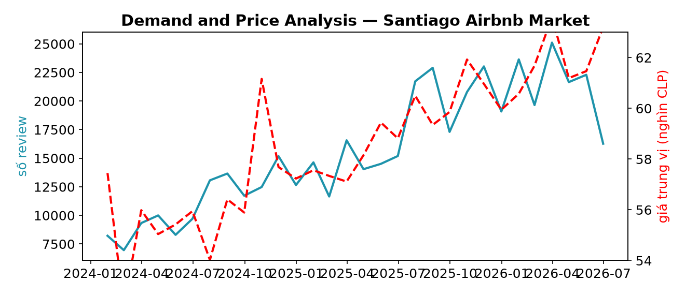
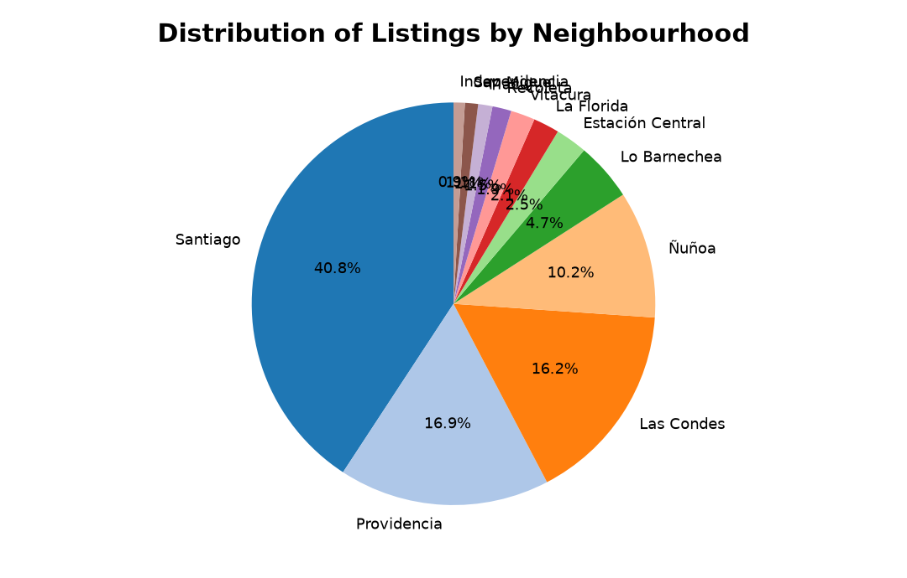
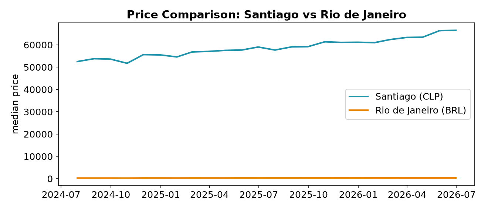
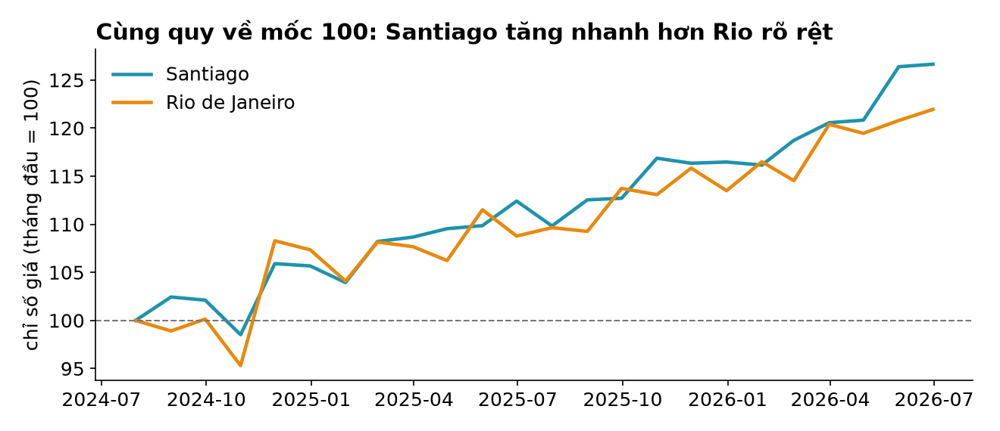

Học kì 1, năm học 2026–2027
Viện Trí tuệ nhân tạo, Trường ĐH Công nghệ, ĐHQGHN
seaborn, bản đồ, tương tác — và kỹ năng thẩm định hình do AI sinh.
matplotlib + ngữ pháp thống kê + mặc định đẹp.
import seaborn as sns
sns.set_theme(style="whitegrid")
sns.boxplot(data=df, x="price", y="room_type")
ax, chỉnh tiếp được như buổi 12.
sns.histplot(data=df[df["neighbourhood"].isin(top2_quan)],
x="price", hue="neighbourhood",
log_scale=True, element="step",
stat="density", common_norm=False)
hue= tách nhóm bằng màu ngay trong lệnh vẽ; common_norm=False để mỗi nhóm tự chuẩn hoá — so hình dáng, không so cỡ nhóm.

# rộng -> dài: mỗi dòng = (quận, loại phòng, giá trung vị)
dai = pivot.reset_index().melt(
id_vars="neighbourhood",
var_name="room_type", value_name="gia")
seaborn muốn mỗi dòng một quan sát, mỗi cột một biến (tidy data). melt là cầu nối từ bảng pivot "rộng" về dạng "dài".
Scatter buổi 12 là nháp — giờ có ranh giới quận thật.
import geopandas as gpd
geo = gpd.read_file(".../neighbourhoods.geojson") # ranh giới quận
kpi = df.groupby("neighbourhood")["price"].median().reset_index()
ban_do = geo.merge(kpi, on="neighbourhood", how="left")
ban_do.plot(column="price", cmap="Blues", legend=True)
Ba bước: đọc ranh giới → tính KPI theo quận (buổi 5) → merge rồi
plot(column=...). File GeoJSON có sẵn trong mọi snapshot Inside Airbnb.

Giới thiệu nhanh — đủ để biết khi nào cần đến.
import plotly.express as px
px.scatter(s, x="longitude", y="latitude",
color="room_type", hover_name="name",
hover_data=["price", "neighbourhood"])
Cú pháp kiểu seaborn; kết quả là HTML sống: rê chuột thấy tên phòng, giá, quận — 18 nghìn điểm tự soi được từng điểm.
| Bối cảnh | Chọn |
|---|---|
| Khám phá dữ liệu, demo trên lớp, dashboard nội bộ | tương tác (plotly, hover là công cụ soi) |
| Báo cáo PDF, slide, in ấn — như bài tập lớn | tĩnh (matplotlib/seaborn) — annotation thay hover |
Nâng cao của bài tập lớn có thể nộp thêm dashboard HTML (fig.write_html) — điểm thưởng, không thay thế hình tĩnh.
AI sinh hình rất nhanh — kể cả hình sai. Ba hình sau đều là kiểu hình AI đưa ra hằng ngày.



CLP và BRL trên cùng một trục — so số tuyệt đối giữa hai tiền tệ là vô nghĩa. Bản sửa: quy về chỉ số, tháng đầu = 100:

Buổi 14 nâng checklist này lên cấp toàn báo cáo — audit một bản phân tích AI viết từ đầu đến cuối.